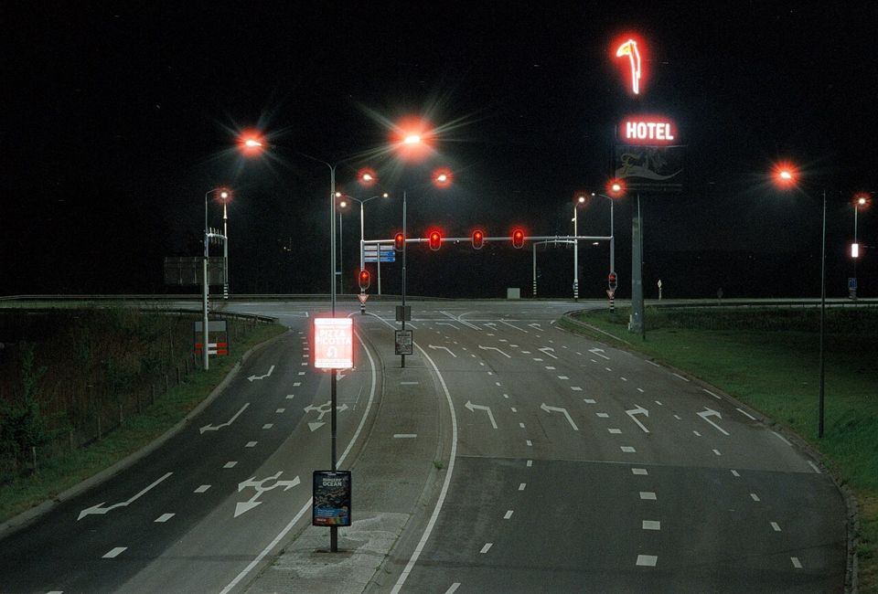

CineStill 800T
밤을 위한 필름. 가로등과 네온 주위로 붉은 빛이 번지고, 도시의 밤이 영화 장면처럼 남습니다.

한눈에 보기
- 감도
- ISO 800
- 종류
- 컬러 네거티브 · C-41 현상
- 판형
- 135 · 120
- 이럴 때
- 밤 산책, 실내 조명, 비 오는 거리
- 가격
- $17.99
특징
- 영화용 필름을 C-41로 현상할 수 있게 개조
- 렘젯층이 없어 강한 광원 주위로 붉은 헐레이션
- 텅스텐(실내 조명) 기준 색온도
찍을 때 팁
텅스텐 조명 기준이라 낮에 찍으면 파랗게 나와요. 낮엔 85 필터를.
이 필름에 대해
밤 사진을 위한 필름입니다. 가로등, 네온, 자동차 불빛 주위로 번지는 붉은 빛이 이 필름의 상징입니다. 낮에 그냥 찍으면 전체가 파랗게 나오므로, 낮에는 85번 필터를 쓰거나 ISO 500 정도로 놓고 찍습니다.
현상
컬러 네거티브 현상. 국내 대부분의 현상소에서 바로 맡길 수 있고, 35mm 한 롤 현상+기본 스캔은 대략 5천~8천 원, 고해상도 스캔은 1만 원 안팎입니다. 현상소 목록과 가격